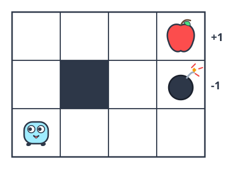
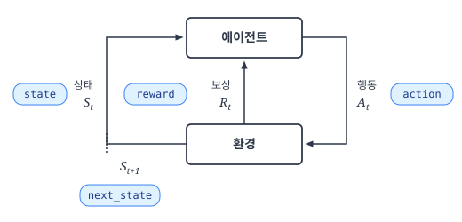
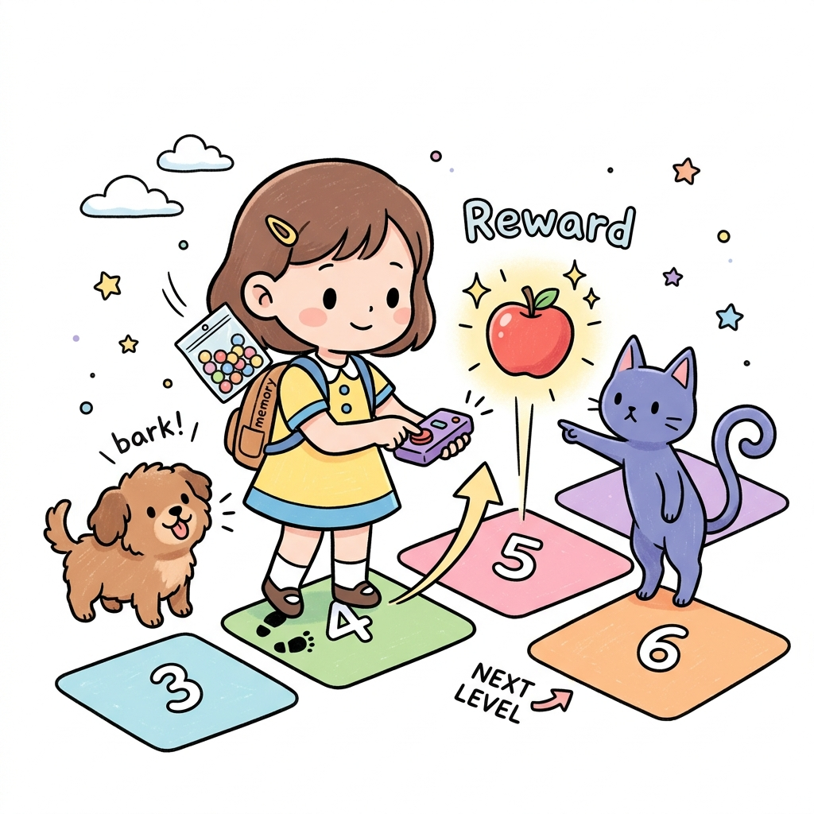
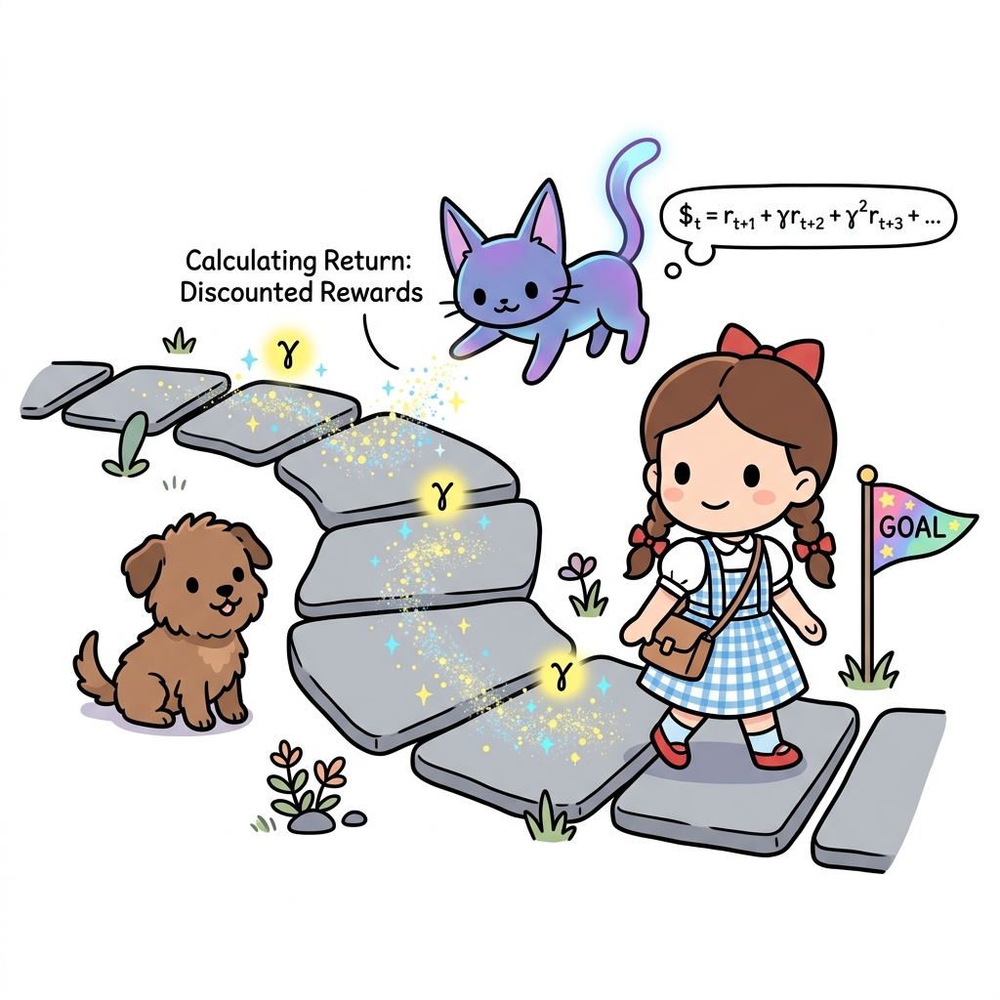
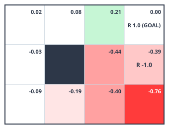

09.3 몬테카를로법 구현
그림 09-3 그리드월드 조작 조종 패드를 쥐고 모니터를 보며, 지니가 보여주는 RandomAgent와 eval() 코드 연동을 실행하는 도로시
파이썬 코드를 기반으로 몬테카를로 정책 평가 알고리즘을 실제로 작성해 봅니다. 환경 클래스 GridWorld에 물리적 움직임을 전달하는 step() 메서드를 구현하고, 에이전트 클래스에서 실시간으로 경험(경로)을 에피소드 데이터 형태로 담아 가치를 갱신하는 과정을 지니 요정의 칠판 릴레이 코드로 명확하게 실습해봅시다!
4장에서 다룬 ‘3 × 4 그리드 월드’ 문제를 이번에는 몬테카를로법으로 풀어보겠습니다.
그림 09-10 3 × 4의 그리드 월드

이번에는 환경 모델(상태 전이 확률과 보상 함수)을 이용하지 않고 정책을 평가합니다. 이렇게 하려면 에이전트에게 실제로 행동하도록 시키는 메서드가 필요합니다.
09.3.1 step() 메서드
GridWorld 클래스에는 step() 메서드가 있습니다. 에이전트에게 행동을 시키는 메서드죠. 어떻게 사용하는지 함께 봅시다.
from common.gridworld import GridWorld
env = GridWorld()
action = 0 # 더미 행동
next_state, reward, done = env.step(action) # 행동 수행
print('next_state:', next_state)
print('reward:', reward)
print('done:', done)
출력 결과
next_state: (1, 0)
reward: 0.0
done: False
step() 메서드는 행동을 매개변수로 받습니다. env.step(action)이라고 호출하면 현재 환경에서 행동 action을 수행하고, 그 결과로 next_state, reward, done이라는 세 가지 값을 반환합니다. state, action, reward, next_state의 관계는 [그림 09-11]을 보면 명확하게 알 수 있습니다.
그림 09-11 코드와 수식의 대응 관계

그림과 같이 현재 시간을 t라고 했을 때, St는 state, At는 action에 해당합니다. 시간 t에 에이전트가 행동을 하면, 보상으로 Rt를 얻고 다음 상태 St+1로 전이합니다. 이때 얻은 보상 Rt가 reward에 해당하고 다음 상태 St+1이 next_state에 해당합니다.
그림 06-11b 행동 리모컨의 버튼을 누르고 얻은 보상 사과와 다음 상태 이동 경험을 배낭 속 memory 리스트에 패키징하여 담는 도로시와 지니

도로시와 토토의 비유로 이해하기: 도로시가 그리드월드 발판에서 행동 리모컨의
step(action)버튼을 딸깍 누르면, 즉시 얻는 보상 사과가 뿅 나오고 다음 발판인next_state로 이동하게 됩니다. 동시에 도로시가 메고 있는 배낭(self.memory) 속에는 이때의 경험 구슬인(상태, 행동, 보상)이 조르륵 팩으로 묶여 저장됩니다.
[!NOTE] ‘3 × 4 그리드 월드’에서는 상태 전이가 결정적으로 이루어지지만 확률적으로 결정되는 경우도 생각할 수 있습니다. 예를 들어 에이전트가 오른쪽으로 이동하는 행동을 시도하면 80%의 확률로만 오른쪽으로 이동하고, 나머지 20%의 확률로는 제자리에 머물러 있을 수 있겠지요. 상태 전이가 확률적일 때는 똑같은 상태에서 똑같이 행동하더라도
step()메서드가 다른 결과를 반환할 수 있습니다.
GridWorld 클래스에서는 step() 메서드를 통해 에이전트에게 행동하도록 하여 샘플 데이터를 얻습니다. 또한, GridWorld 클래스에는 reset() 메서드도 있습니다. 환경을 초기 상태로 재설정하는 메서드입니다. 사용법은 다음과 같습니다.
env = GridWorld()
state = env.reset() # 상태 초기화
reset() 메서드는 초기 상태(state)를 반환합니다.
이상으로 GridWorld 클래스에 대해 조금 더 알아보았습니다.
09.3.2 에이전트 클래스 구현
이제 몬테카를로법을 이용하여 정책 평가를 수행하는 에이전트를 구현할 차례입니다. 무작위 정책에 따라 행동하는 에이전트를 RandomAgent 클래스로 구현하겠습니다. 먼저 코드의 전반부를 살펴봅시다.
class RandomAgent:
def __init__(self):
self.gamma = 0.9
self.action_size = 4
random_actions = {0: 0.25, 1: 0.25, 2: 0.25, 3: 0.25}
self.pi = defaultdict(lambda: random_actions)
self.V = defaultdict(lambda: 0)
self.cnts = defaultdict(lambda: 0)
self.memory = []
def get_action(self, state):
action_probs = self.pi[state]
actions = list(action_probs.keys())
probs = list(action_probs.values())
return np.random.choice(actions, p=probs)
초기화 메서드인 __init__()에서 할인율 gamma와 행동의 가짓수 action_size를 설정합니다. 그리고 무작위 행동을 할 확률 분포를 random_actions로 만들어 정책 self.pi에 설정합니다. self.V는 가치 함수를, self.memory는 에이전트가 실제로 행동하여 얻은 경험(‘상태, 행동, 보상’)을 담는 역할입니다. self.cnts는 ‘증분 방식’으로 수익의 평균을 구할 때 사용합니다.
다음은 get_action(self, state) 메서드입니다. 이 메서드는 state에서 수행할 수 있는 행동을 하나 가져옵니다. 중요한 부분은 마지막 줄의 np.random.choice(actions, p=probs)입니다. probs의 확률 분포에 따라 행동을 한 개씩 샘플링하는 코드입니다.
[!NOTE] 몬테카를로법에서는 에이전트가 행동을 선택하게 하는 것, 즉 ‘행동을 샘플링할 수 있다’는 것이 조건입니다. 따라서 행동의 확률 분포를 담는
self.pi변수를 사용하지 않는 방법도 있습니다. 이번 절에서 보여드리는 에이전트는 ‘분포 모델’에 따른 구현이며, 또 다른 방법으로 ‘샘플 모델’에 따른 구현도 생각해볼 수 있습니다. 샘플 모델 방식의 구현은 6.5절에서 설명합니다.
다음은 RandomAgent 클래스의 나머지 코드(후반부)입니다.
class RandomAgent:
...
def add(self, state, action, reward):
data = (state, action, reward)
self.memory.append(data)
def reset(self):
self.memory.clear()
def eval(self):
G = 0
for data in reversed(self.memory): # 역방향으로(reversed) 따라가기
state, action, reward = data
G = self.gamma * G + reward
self.cnts[state] += 1
self.V[state] += (G - self.V[state]) / self.cnts[state]
먼저 실제로 수행한 행동과 보상을 기록해주는 add() 메서드를 보겠습니다. 이 메서드를 호출하면 ‘상태, 행동, 보상’을 (state, action, reward) 튜플로 묶어 리스트인 self.memory에 추가합니다. 튜플로 묶는 이유는 무엇일까요? 예를 들어 다음과 같은 시계열 데이터를 얻었다고 가정해봅시다.
이 데이터를 얻었다면 지금 코드에서는 다음과 같은 형태로 보관합니다.
# agent.memory
[(S0, A0, R0), (S1, A1, R1), ..., (S8, A8, R8)]
보다시피 (state, action, reward) 단위로 저장되어 있습니다. 여기서 주의할 점은 마지막 상태(지금 예에서 S9)는 self.memory에 저장되지 않는다는 것입니다. 왜냐하면 마지막 상태(목표 지점)의 가치 함수는 항상 0이기 때문이죠. 다르게 말하면, 마지막 상태는 가치 함수를 갱신할 필요가 없으므로 self.memory에 추가하지 않습니다.
다음은 eval() 메서드를 보겠습니다. RandomAgent 클래스에서 몬테카를로법을 수행하는 주인공이죠. 먼저 수익 $G$를 0으로 초기화하고, 실제로 얻은 self.memory를 역방향으로 따라가면서 각 상태에서 얻은 수익을 계산합니다. 그리고 각 상태에서의 가치 함수를 그때까지 얻은 수익의 평균으로 구합니다. 이 코드에서는 평균을 ‘증분 방식’으로 계산했습니다.
그림 06-12b 에피소드가 골 지점(GOAL)에서 종료된 뒤, 역방향(reversed)으로 되짚어가며 할인율 gamma를 정밀하게 곱해 효율적으로 수익 G를 누적하는 지니와 도로시

도로시와 토토의 비유로 이해하기: 도로시는 목표 지점(에피소드의 끝)에 도달한 뒤, 출발지점을 향해 징검다리를 거꾸로 밟고 되돌아가며(
reversed(memory)) 각 단계마다 할인율 γ를 꼼꼼하게 곱해줍니다. 이렇게 뒤에서부터 계산해 나가면, 중복 연산 없이 단 한 번의 루프만으로 모든 상태의 누적 할인 수익 G를 매우 빠르고 깔끔하게 계산할 수 있습니다!
이상이 RandomAgent 클래스입니다.
09.3.3 몬테카를로법 실행
에이전트를 구현한 RandomAgent 클래스와 환경을 구현한 GridWorld 클래스를 연동하여 실행해봅시다.
env = GridWorld()
agent = RandomAgent()
episodes = 1000
for episode in range(episodes): # 에피소드 1000번 수행
state = env.reset()
agent.reset()
while True:
action = agent.get_action(state) # 행동 선택
next_state, reward, done = env.step(action) # 행동 수행
agent.add(state, action, reward) # (상태, 행동, 보상) 저장
if done: # 목표에 도달 시
agent.eval() # 몬테카를로법으로 가치 함수 갱신
break # 다음 에피소드 시작
state = next_state
# 모든 에피소드 종료
# 가치 함수 시각화
env.render_v(agent.V)
에피소드를 총 1000번 실행했습니다. 에피소드가 시작되면 환경과 에이전트를 초기화한 다음 while문 안에서 나머지 작업들을 처리합니다. 먼저 에이전트에게 행동하게 하고 그 결과로 얻은 ‘상태, 행동, 보상’의 샘플 데이터를 기록합니다. 목표에 도달하면 그동안 얻은 샘플 데이터를 이용하여 몬테카를로법으로 가치 함수를 갱신합니다. 마지막으로 while문을 빠져나와 다음 에피소드를 시작합니다.
그리고 1000번의 에피소드가 모두 끝나면 env.render_v(agent.V) 코드에서 가치 함수를 시각화합니다.
다음 그림은 이 코드를 실행하여 얻은 가치 함수를 시각화한 모습입니다.
그림 09-12 몬테카를로법으로 얻은 가치 함수

이번에는 무작위 정책의 가치 함수를 평가했습니다. 에이전트의 시작 위치는 왼쪽 맨 아래의 한 곳으로 고정되어 있지만 무작위 정책이기 때문에 어떠한 위치든 경유할 수 있습니다. 그래서 모든 위치(상태)에서의 가치 함수를 평가할 수 있었습니다.
[!CAUTION] 에이전트의 시작 위치가 고정되어 있고 정책이 결정적이라면, 에이전트는 정해진 상태만을 경유합니다. 이렇게 되면 일부 상태에서는 수익 샘플 데이터를 수집하지 못할 수 있습니다.
참고 삼아 [그림 09-12]의 결과를 동적 프로그래밍(DP)으로 평가한 결과와 비교해보겠습니다.
그림 09-13 몬테카를로법으로 얻은 가치 함수와 동적 프로그래밍으로 얻은 가치 함수 비교
동적 프로그래밍으로 얻은 오른쪽 그림이 올바른 결과지만, 몬테카를로법을 이용한 경우에도 차이가 거의 없음을 알 수 있습니다. 이처럼 몬테카를로법을 이용하면 환경 모델을 몰라도 정책 평가를 제대로 할 수 있습니다.